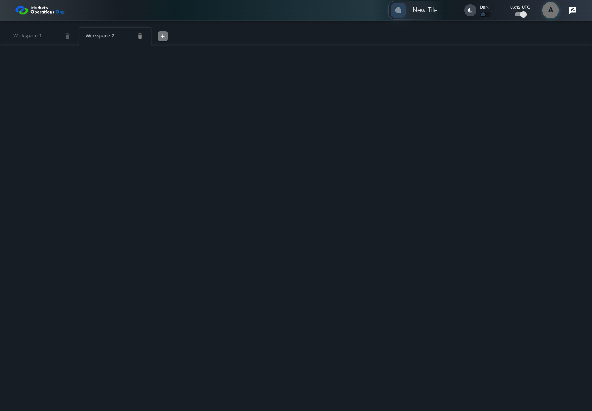
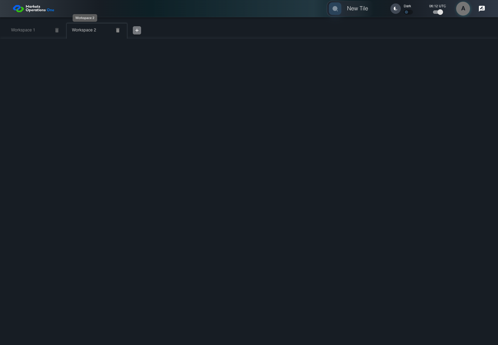

UI-SHL-003 add blank workspace after Workspace 1
PASS · application/run-050/ui-shl-003-add-blank-workspace-after-workspace-1-ab2811b77377-attempt-1 · ACTUAL_APPLICATION_LOCAL_SERVICES
Actual current React MFE; controlled accepted login and activity renewal responses; UI-USER-01; empty W1 seeded; no real permission or BFF persistence verification.
2026-10-22T06:12:27.532Z to 2026-10-22T06:12:31.019Z
Assertions and result · Artifact manifest · Exact run inputs and source hashes
Result SHA-256:d81365d277e1052e0270c0cc489a83bf656223cf78bdc30816ffce691a633491Screenshot capture: CAPTURED. Named frames: 7.
Step screenshot bindings: COMPLETE. 6/6 canonical steps have execution screenshots.
Bindings measure structural coverage only. They do not establish screenshot content quality or relevance.
Screenshot content review: NOT_REVIEWED. Recorded context: 0/7 frames. Identical image bytes: 3 repeated frames. Recorded context does not establish human visual review.
Canonical step timeline
Given User A is authenticated as fixture UI-USER-01 with the case-specific permissions
Execution: PASSED.
1. step-01 Visible state after step 1: Given User A is authenticated as fixture UI-USER-01 with the case-specific permissions
2026-10-22T06:12:29.034Z · 1440×1000
Step: /Users/lushevol/code/github/ratan-release-impact/workbench/tasks/ui-test-coverage-20261022/test-cases.md:5466
SHA-256:b0d8bd3f9faf25b9831e8e67fc0e92f9f9cff7591bb746b16bfcb116162ff137And only W1 exists with label Workspace 1
Execution: PASSED.
2. step-02 Visible state after step 2: And only W1 exists with label Workspace 1
2026-10-22T06:12:29.116Z · 1440×1000
Step: /Users/lushevol/code/github/ratan-release-impact/workbench/tasks/ui-test-coverage-20261022/test-cases.md:5467
SHA-256:b0d8bd3f9faf25b9831e8e67fc0e92f9f9cff7591bb746b16bfcb116162ff137Image bytes match frame 1. An unchanged image can be valid for consecutive assertions. This match does not establish correct step content.
When User A clicks button named "Add Workspace" inside the shell tablist named "workspaces"
Execution: PASSED.
3. step-03 Visible state after step 3: When User A clicks button named "Add Workspace" inside the shell tablist named "workspaces"
2026-10-22T06:12:29.308Z · 1440×1000
Step: /Users/lushevol/code/github/ratan-release-impact/workbench/tasks/ui-test-coverage-20261022/test-cases.md:5468
SHA-256:8289e88c836f05e25fca71a2e90199e33e23f1e35a0124a306a99a636c3d6bdaThen tab with source identity "Workspace Name textbox value Workspace 2" inside the shell tablist named "workspaces" is selected
Execution: PASSED.
4. step-04 Visible state after step 4: Then tab with source identity "Workspace Name textbox value Workspace 2" inside the shell tablist named "workspaces" is selected
2026-10-22T06:12:29.375Z · 1440×1000
Step: /Users/lushevol/code/github/ratan-release-impact/workbench/tasks/ui-test-coverage-20261022/test-cases.md:5469
SHA-256:d513fb39720a5f2e9dcf9af8a2f349082bcfa0a667f89acabcca9730d50d9be2And the tab count inside the tablist named "workspaces" equals 2
Execution: PASSED.
5. step-05 Visible state after step 5: And the tab count inside the tablist named "workspaces" equals 2
2026-10-22T06:12:29.447Z · 1440×1000
Step: /Users/lushevol/code/github/ratan-release-impact/workbench/tasks/ui-test-coverage-20261022/test-cases.md:5470
SHA-256:d513fb39720a5f2e9dcf9af8a2f349082bcfa0a667f89acabcca9730d50d9be2Image bytes match frame 4. An unchanged image can be valid for consecutive assertions. This match does not establish correct step content.
And button named "Find tile" inside the selected new workspace tabpanel is visible
Execution: PASSED.6. step-06 Visible state after step 6: And button named "Find tile" inside the selected new workspace tabpanel is visible
2026-10-22T06:12:30.352Z · 1440×1000
Step: /Users/lushevol/code/github/ratan-release-impact/workbench/tasks/ui-test-coverage-20261022/test-cases.md:5471
SHA-256:d15b50f81d50c5952b1f5b118d5c9147943a25c269306c02061f66a4cb30123e
Additional named frames

The final visible state after the named test assertions.
2026-10-22T06:12:30.517Z · 1440×1000Step: Test source: /Users/lushevol/code/github/ratan-release-impact/workbench/e2e/audit-specs/workspaces.spec.ts:32
SHA-256:
d15b50f81d50c5952b1f5b118d5c9147943a25c269306c02061f66a4cb30123eImage bytes match frame 6. An unchanged image can be valid for consecutive assertions. This match does not establish correct step content.
Screenshots establish visible state only. Assertions and traces support functional claims.